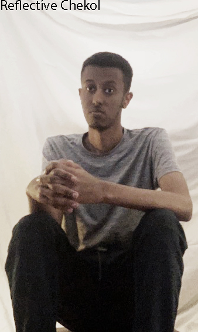
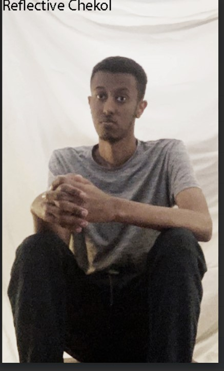

Audio Video Media Production at Howard Community College
Welcome to the portfolio of Jonathan Chekol
JONATHAN CHEKOL
Jonathan Chekol is currently a junior at Howard Community College (HCC) majoring in Audio Video Media Production. He is a kind, friendly, highly organized person with attention to detail. Sports broadcasting has been a dream job for Jonathan since childhood. As a result, he has an in-depth knowledge of sports such as football, basketball and soccer. With a voice made for broadcasting, Jonathan hopes to make his career as a sports commentator.

BLOG ENTRY
Work Experience, November,3, 2023
Jonathan worked last year for the Howard Community College (HCC) Athletics Department as a Multimedia Sports Communication Intern. In this capacity, he created game highlights, and promotional pictures for websites, coordinated with coaches to write profiles for individual student-athletes and other duties that were assigned to me by the manager of sports information. Chekol currently works for the HCC Times as a sports and campus profile writer. As a sports writer, he covers events that are going on nationally and on-campus and as a campus profile he covers different programs of the campus.
Volunter Work
Outside of sports projects, Chekol volunteers in his community. He volunteered in the Ethiopian Community Support Group in Olney, MD as a peer mentor. He helped with team building exercises, cleaned the property before and after an event. Jonathan has volunteered for Tsinat Institute in Silver Spring, MD, working with students with autism supporting them to interact in a positive and meaningful way. Chekol is currently a reading and writing tutor where he is assisting students to understand the text by giving context clues, reading comprehension questions and the end of unit tests.
Popular Posts
-
Lorem
Sed mattis nunc -

Ipsum
Praes tinci sed -

Dorum
Ultricies congue

Tags
Travel Oromond Beach Pasadena AVMP COVID-19 Photomontage Tsiant Volunter Austic Students Multimedia Sports Communcation Intern Video Editor Athletics Department Newspaper Campus Profile Events on Campus Sportswriter Writing about Games